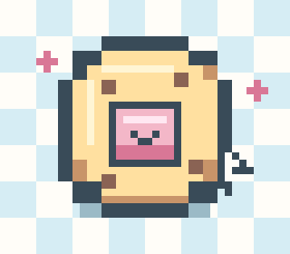

CHARACTER CLICK TYPE
이 캐릭터의 클릭 타입은
by 꾹꾹이 쿠키 클리커캐릭터 클릭 타입 테스트
차분하게 눌리는 타입일까,
통통 튀는 타입일까?
캐릭터의 성격과 분위기를 바탕으로 어울리는 소리와 손끝 감각을 찾아보세요.
꾹꾹이 쿠키 클리커의 실제 캐릭터 스위치 매칭 방식을 바탕으로 만든 테스트입니다.

캐릭터의 성격을
소리와 촉감으로 바꾸는 중
BEFORE WE START
이름은 선택 사항이에요. 비워두어도 결과를 자연스럽게 보여드릴게요.
CHARACTER CLICK TYPE
이 캐릭터의 클릭 타입은
by 꾹꾹이 쿠키 클리커CHARACTER STORY
FIRST LOOK & INNER SIDE
CLICK FEEL
숫자 대신 실제로 느껴질 소리와 손끝 감각으로 풀어봤어요.
MATCHED SWITCH
OTHER DIRECTIONS
FROM TYPE TO COOKIE
PICK YOUR SWITCH RANGE
답변과 매칭 점수는 그대로 유지하고, 선택한 보유축 안에서만 순위를 다시 계산합니다.
INTERNAL ONLY